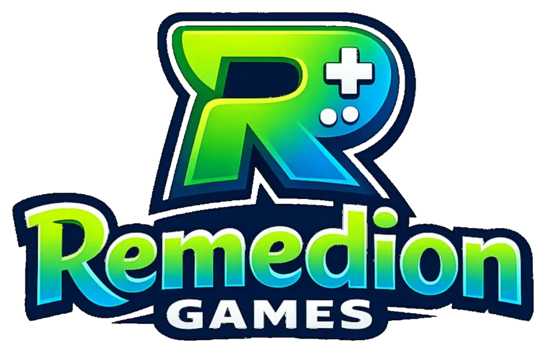
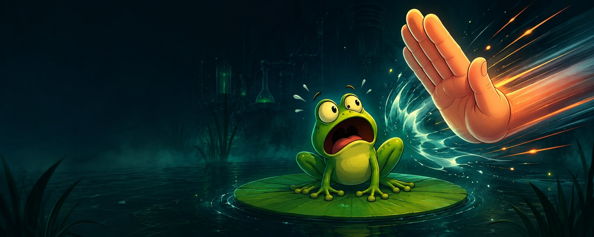

Slap & React
Unterschiedliche Gegner verlangen unterschiedliche Reaktionen. Blind draufklatschen endet schnell schmerzhaft.

Android Arcade Game
Tippe Frösche im richtigen Moment, überlebe immer wildere Welten, sammle Kräfte und Runen – und leg dich mit Bossen an, die garantiert nicht freiwillig auf dem Seerosenblatt bleiben.

Das Spiel
FrogSlap ist ein reaktionsschnelles Mobile-Arcade-Game. Jeder Run fordert schnelle Entscheidungen: Welcher Frosch muss sofort weg, welche Kraft rettet den Lauf und wie lange hältst du das Chaos aus?
Unterschiedliche Gegner verlangen unterschiedliche Reaktionen. Blind draufklatschen endet schnell schmerzhaft.
Wähle Kräfte, kombiniere Runen und passe deinen Spielstil zwischen den Runs immer weiter an.
Jede Welt dreht am Schwierigkeitsregler. Am Ende warten eigene Bosse und besondere Belohnungen.
Nach dem normalen Durchlauf wird der Chaosmodus freigeschaltet. Der Name ist keine leere Drohung.
Progression
Der Lauf beginnt im Wald und führt durch immer gefährlichere Gebiete bis ins Labor. Neue Gegnertypen, Power-ups, Runen, Karten und Relikte sorgen dafür, dass kein Run exakt gleich abläuft.
Google-Dienste
FrogSlap verwendet Google Play Games Services, damit Spieler sich mit ihrem Google-Konto anmelden und Spielfunktionen wie Erfolge, Bestenlisten und cloudbasierte Spielstände nutzen können.
Dafür werden nur die Google-Nutzerdaten angefordert, die für diese Funktionen notwendig sind. Dazu können Play-Games-Profil, Spieler-ID, Erfolge und Bestenlistendaten gehören. Eine Nutzung für sachfremde Zwecke findet nicht statt.
Datenschutzerklärung lesen →Bereit?